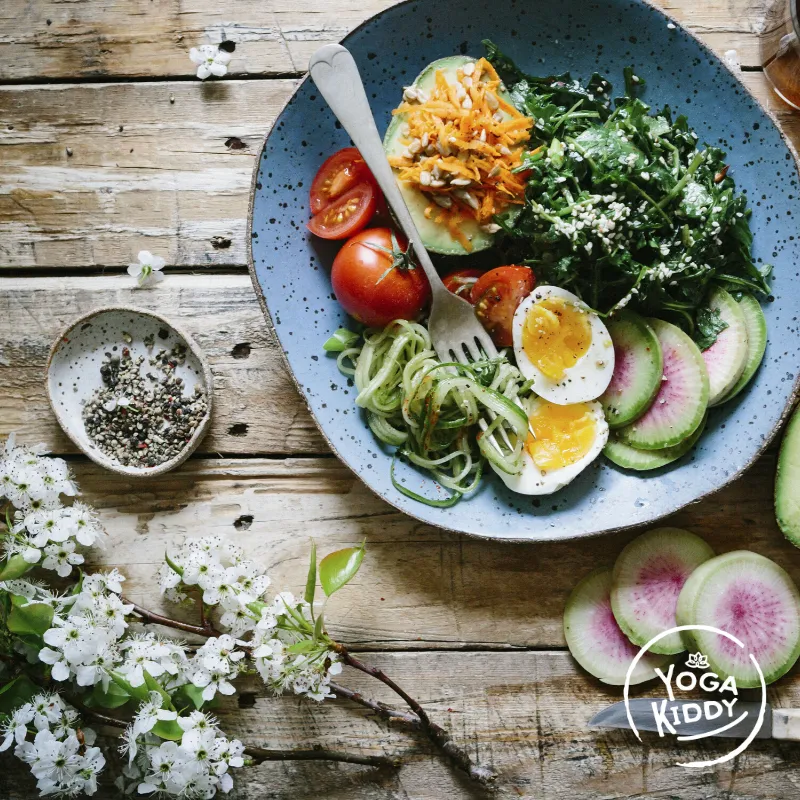

La responsabilidad al trabajar con y para la infancia es transversal. Por medio del yoga infantil podemos desarrollar conciencia en diversos aspectos y uno de ellos totalmente necesario, es el autocuidado mediante una alimentación saludable. Ayudarles a comprender que tomar decisiones alimentarias con responsabilidad es un acto de amor propio, es también generar reflexiones en torno a la manera de nutrirse y a la forma en que queremos vivir. Nuestra alimentación habla del amor que tenemos por nuestro cuerpo, nuestra mente y nuestras emociones. El tomar conciencia de los alimentos que consumimos, es un camino de descubrimiento que invita a explorar y transformar.
La comprensión del autocuidado es necesaria ser descubierta en la infancia para así nutrir el camino. La conciencia sobre la alimentación permite valorarnos y valorar lo ancestral. Promover una cultura nutricional es sostener la sólida convicción de que lo que comemos ahora, determinará nuestro futuro. Es la alimentación una oportunidad para encontrarse consigo mismo/a, con la naturaleza, con la creación, con el todo.
Hipócrates decía:
“El padre de la enfermedad puede ser cualquiera, pero la madre es una mala alimentación”
Una alimentación inadecuada sostenida durante nuestra vida adulta tiene considerables impactos negativos. Pero en lo que respecta a la infancia las consecuencias son aún mucho peores. Los niños y niñas se encuentran en su más elevado nivel de desarrollo en todos los aspectos: físico, mental, intelectual, cognitivo, etc. Una infancia en donde no se cuidan los hábitos alimentarios, crea un sistema inmunológico débil, un cerebro poco estimulado y una existencia con muchos riesgos.
Alimentación y Sistema Nervioso
Para cuidar la buena transmisión y conducción del sistema nervioso es fundamental que la mielina este siendo producida adecuadamente, y para ello, es imprescindible mantener una dieta con aquellos alimentos requeridos para su buena producción y regeneración.
¿Porque es importante la Mielina?
La mielina es una sustancia grasa que envuelve las fibras nerviosas y tiene como función el aumento de la velocidad de los impulsos nerviosos, facilitando la comunicación entre neuronas. Este proceso va en paralelo con el desarrollo cognitivo del ser humano. Las conexiones neuronales se van volviendo más complejas, y su mielinización va relacionada con la realización de conductas cada vez más elaboradas. No es el número de neuronas con lo que influye en el aprendizaje, sino las conexiones neuronales fomentadas por una alimentación saludable. Una neurona recubierta de mielina transmite cien veces más rápido el impulso nervioso versus otra que no, produciendo una mayor eficacia en el funcionamiento del organismo.
Alimentos favorables para producción de Mielina
- Ácido fólico presente en cereales integrales y granos.
- Vitamica C existente en naranjas, limones, kiwi, brócoli, pimentón.
- Ácido oleico que lo encontramos en aceitunas, nueces, semillas y aceite de oliva.
- Vitamina A y D obtenidas por el consumo de papaya, zanahoria, espinaca, papa, soya, champiñones.
Alimentos desfavorables para la producción de Mielina:
- Grasas Saturadas como Frituras y Embutidos.
- Azúcar refinada como comida procesada, pasteles, dulces, bebidas, kétchup, etc.
Hoy en día estamos comiendo más “productos” que ALIMENTOS, lo que nos indica lo desinformados que estamos como sociedad. El ser humano ha avanzado y evolucionado en muchos aspectos pero en relación a la importante acción alimentaria es necesario avanzar. Los hábitos alimentarios deben ser promovidos por nosotros, los adultos. ¡La responsabilidad es nuestra! El Yoga infantil también es crear consciencia sobre la elección en la variedad y diversidad de alimentos que tenemos a nuestra disposición. **Por medio del yoga, podemos respetar en niños y niñas el derecho a la vida, el derecho a un desarrollo saludable y con conocimiento.